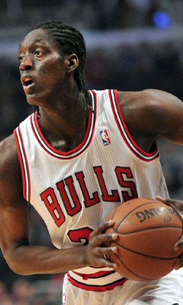

|  |
Матчи |
72 |
|
Передачи (всего/среднее) |
62 |
0.9 |
| В основе |
22 |
|
Подборы в защите (всего/среднее) |
145 |
2 |
| Время (всего/среднее) |
1412:08 |
19:37 |
Подборы в атаке (всего/среднее) |
31 |
0.4 |
| Очки (всего/среднее) |
435 |
6 |
Подборы (всего/среднее) |
176 |
2.4 |
| 2-очковые броски (всего/среднее) |
86/174 |
1.2/2.4 |
Перехваты (всего/среднее) |
32 |
0.4 |
| 2-очковые броски (% реализации) |
49.4% |
|
Потери (всего/среднее) |
48 |
0.7 |
| 3-очковые броски (всего/среднее) |
73/197 |
1/2.7 |
Блокшоты (всего/среднее) |
11 |
0.2 |
| 3-очковые броски (% реализации) |
37.1% |
|
Блокшоты соперника (всего/среднее) |
21 |
0.3 |
| Штрафные броски (всего/среднее) |
44/55 |
0.6/0.8 |
Фолы (всего/среднее) |
86 |
1.2 |
| Тони Снелл |
Штрафные броски (% реализации) |
80% |
|
Коэффициент полезности (всего/среднее) |
338 |
4.7 |